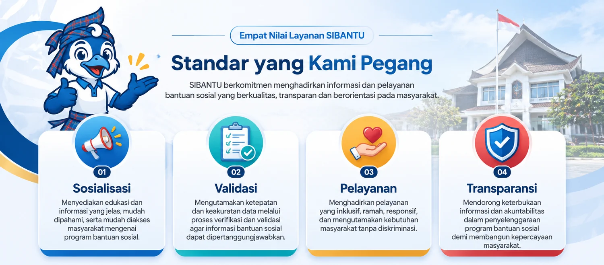

Portal resmi SIBANTU
Tahap III sedang berjalan · 2026Bantuan sosial tunai yang jelas, terbuka, dan tepat sasaran.
SIBANTU menyatukan persyaratan, alur pengusulan, jadwal pencairan, dan pengumuman resmi bantuan sosial tunai Provinsi Sulawesi Barat dalam satu portal.
Status penyaluran
Tahap I–II · 2026
0 dari 2.251 KPM · Dalam proses di BPKAD
Nilai layanan
Empat nilai layanan SIBANTU
Empat nilai utama yang menjadi landasan kami dalam menghadirkan informasi dan pelayanan bantuan sosial yang berkualitas.

Tahap berjalan
Tahap I–II · 2026
Total penerima
2.251 KPM
Tentang SIBANTU
Satu pintu informasi, tanpa perantara.
SIBANTU — Sistem Informasi Bantuan Sosial Terpadu — mengubah cara data bantuan sosial dikelola. Pengusulan dan verifikasi tidak lagi memakan waktu lama: notifikasi otomatis dan alur kerja terstandarisasi mempercepat proses dari desa hingga provinsi.
Validasi bertingkat dan pengecekan silang digital menekan data ganda serta data fiktif. Jejak audit berjenjang mencatat setiap perubahan, persetujuan, dan penolakan secara kronologis — menjawab rekomendasi BPK dan memudahkan pemeriksaan.
- Persyaratan, alur, dan jadwal dapat dibaca tanpa mendaftar.
- Dokumen SK dan SPTJM terunggah digital di setiap tingkatan.
- Tidak ada data pribadi penerima yang dipublikasikan.
- Setiap angka bersumber dari data resmi dinas.
Program bantuan
Layanan yang berjalan
Tiga layanan utama: penyaluran tunai, pendampingan sosial, dan edukasi warga.
Bantuan Sosial Tunai (BST)
Bantuan uang tunai per tahap untuk keluarga penerima manfaat yang telah ditetapkan.
Pendampingan Sosial
Pendampingan bagi penerima lanjut usia, penyandang disabilitas, dan warga terpencil.
Edukasi & Sosialisasi Warga
Kegiatan sosialisasi kriteria, alur, dan pencegahan pungutan liar di tingkat desa.
Alur pengusulan
Lima tahap, satu rantai data
Dari musyawarah desa sampai Keputusan Gubernur. Warga hanya hadir pada saat pencairan.
Musyawarah desa
Warga dan perangkat desa menetapkan calon penerima lewat SK Kepala Desa/Lurah.
Pengusulan
Operator SIBANTU desa mengunggah identitas dan SPTJM kolektif, lalu mengirim surat pengantar.
Verifikasi kabupaten
Verifikator memeriksa kriteria dan identitas; bila disetujui, BAP diteruskan ke provinsi.
Rekonsiliasi provinsi
Provinsi mencocokkan data dan memverifikasi ulang identitas antar-kabupaten.
Penetapan Gubernur
Berkas legalitas final diunggah dan Keputusan Gubernur diterbitkan.
Sosialisasi & edukasi
Warga paham, pungli terhindar.
Materi sosialisasi disiapkan untuk rapat desa: kriteria, dokumen, alur pengusulan, dan cara melaporkan permintaan uang.
Galeri
Dokumentasi kegiatan
Transparansi
Angka yang bisa diperiksa.
Realisasi penyaluran dan dokumen penetapan dipublikasikan setiap tahap.
Kontak
Ada pertanyaan atau kendala pencairan?
Hubungi helpdesk pada hari kerja, atau dinas sosial kabupaten tempat Anda terdaftar.
Kantor layanan
Jl. Abdul Malik Pattana Endeng, Simboro, Mamuju
0426-XXXXXX
Senin–Jumat, 08.00–16.00 WITA